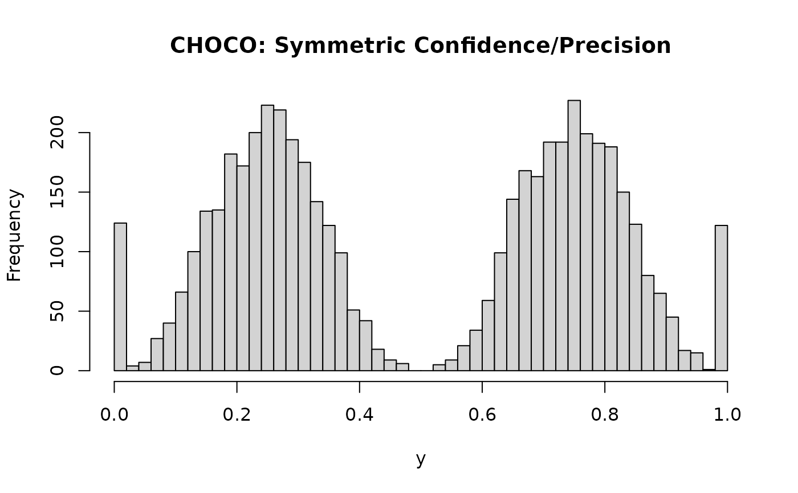

Simulates data from the Choice-Confidence (CHOCO) model. This model is useful for subjective ratings (e.g., Likert-type scales) where responses represent a choice between two underlying categories (e.g., "disagree" vs. "agree") along with a degree of confidence or intensity.
The CHOCO model divides the response scale at a threshold. Responses below the
threshold are modeled by a mirrored Beta-Extreme (BEXT) distribution,
and responses above the threshold are modeled by a standard BEXT distribution.
Usage
rchoco(
n,
p = 0.5,
conf = 0.5,
confleft = 0,
prec = 4,
precleft = 0,
pex = 0.1,
bex = 0.5,
pmid = 0,
threshold = 0.5
)
dchoco(
x,
p = 0.5,
conf = 0.5,
confleft = 0,
prec = 4,
precleft = 0,
pex = 0.1,
bex = 0.5,
pmid = 0,
threshold = 0.5,
log = FALSE
)
choco_lpdf_expose()
choco_stanvars()
choco(
link_mu = "logit",
link_conf = "logit",
link_confleft = "identity",
link_prec = "softplus",
link_precleft = "identity",
link_pex = "logit",
link_bex = "logit",
link_pmid = "logit"
)
log_lik_choco(i, prep)
posterior_predict_choco(i, prep, ...)
posterior_epred_choco(prep)Arguments
- n
Number of simulated trials. Must be a positive integer.
- p
Proportion parameter determining the balance between the left and right sides after excluding the probability mass at the threshold (
pmid). Specifically,P(Right Side | Not Threshold) = pandP(Left Side | Not Threshold) = 1 - p. Must be in the range[0, 1]. Inbrmsmodels, this corresponds to themuparameter.- conf
Mean parameter for the underlying BEXT distribution used for the right side (
thresholdto 1). This represents the central tendency (confidence) of the raw BEXT component (before scaling). Must be strictly between 0 and 1. The mean of the raw BEXT component for the left side (muleft) is derived fromconfbefore applyingconfleft, such thatconfleft = 0implies mirrored confidence (muleft = conf).- confleft
Difference parameter modifying the mean for the left side BEXT distribution. The mean of the raw BEXT component for the left side is calculated as
muleft = inv_logit(logit(conf) + confleft). Aconfleft = 0implies the raw mean for the left side is the same as the right side (muleft = conf). Positive values increasemuleft, resulting in final CHOCO values closer to 0 (higher confidence on the left).- prec
Precision parameter (
phi) for the underlying BEXT distributions. This sets the base precision for the right side and is used to derive the left side's precision. Must be positive. Note: This corresponds to half the typical Beta precision (precision = prec * 2).prec = 1corresponds to a uniform distribution (when the respective raw mean is 0.5).- precleft
Difference parameter modifying the precision for the left side BEXT distribution. The precision (
phi) of the raw BEXT component for the left side is calculated asprec_left = prec * exp(precleft). Aprecleft = 0implies the precisions are the same. Positive values increase the precision on the left side.- pex
Overall probability of extreme values (0 or 1) within each underlying BEXT component (before scaling/mirroring). This applies commonly to both left and right sides.
0 <= pex <= 1.- bex
Balances the extreme probability mass within each underlying BEXT component between its 0 and 1 anchors.
P(raw=1) = pex * bex,P(raw=0) = pex * (1 - bex). Note that for the left CHOCO component,raw=1maps to CHOCO value 0, and for the right CHOCO component,raw=1maps to CHOCO value 1.0 <= bex <= 1. The interpretation of howpexandbextranslate to the final CHOCO extremes (0 and 1) depends on the internalpex_leftandpex_rightcalculations (see Details).- pmid
Probability mass exactly at the
threshold.0 <= pmid <= 1.- threshold
The point dividing the scale into left and right components. Must be strictly between 0 and 1.
- x
Vector of quantiles (values at which to evaluate the density). Must be between 0 and 1, inclusive.
- log
Logical; if TRUE, returns the log-density.
- link_mu, link_conf, link_confleft, link_prec, link_precleft, link_pex, link_bex, link_pmid
Link functions for the parameters.
- i, prep
For brms' functions to run: index of the observation and a
brmspreparation object.- ...
Additional arguments.
Details
The simulation process involves three steps:
Decide whether the outcome is exactly at the
threshold(with probabilitypmid).If not at the threshold, decide whether the outcome falls on the right side (with conditional probability
p) or the left side (with conditional probability1-p).Simulate the value from the corresponding BEXT distribution:
Left Side (0 to
threshold): Calculatemu_left = inv_logit(logit(conf) + confleft)andprec_left = prec * exp(precleft). The effective extreme probability for the underlyingrbextcall (targeting raw value 1, which maps to CHOCO 0) is calculated aspex_left = pmin(1, pmax(0, (1 - bex) * (pex * 2))). Simulatey_rawfromrbext(mu=mu_left, phi=prec_left, pex=pex_left, bex=1). The final value is(1 - y_raw) * threshold.Right Side (
thresholdto 1): Calculatemu_right = confandprec_right = prec. The effective extreme probability for the underlyingrbextcall (targeting raw value 1, which maps to CHOCO 1) is calculated aspex_right = pmin(1, pmax(0, bex * (pex * 2))). Simulatey_rawfromrbext(mu=mu_right, phi=prec_right, pex=pex_right, bex=1). The final value isthreshold + y_raw * (1 - threshold).
The calculation pex * 2 in pex_left and pex_right arises from the specific way rbext
handles its pex and bex parameters when simulating extremes. It ensures the intended
proportions land at CHOCO=0 and CHOCO=1 based on the input pex and bex.
References
Kubinec, R. (2023). Ordered beta regression: a parsimonious, well-fitting model for continuous data with lower and upper bounds. Political Analysis, 31(4), 519-536. (Describes the underlying ordered beta model)
Examples
# Simulate data with different parameterizations
# 10% at threshold, 50/50 split otherwise, symmetric confidence/precision
x1 <- rchoco(n=5000, p = 0.5, conf = 0.5, confleft = 0, prec = 4,
precleft = 0, pex = 0.1, bex = 0.5, pmid = 0, threshold = 0.5)
hist(x1, breaks = 50, main = "CHOCO: Symmetric Confidence", xlab = "y")

# No threshold mass, 70% probability on right, higher confidence left
x2 <- rchoco(n=5000, p = 0.7, conf = 0.5, confleft = 1, prec = 3,
precleft = 1, pex = 0.05, bex = 0.7, pmid = 0, threshold = 0.5)
hist(x2, breaks = 50, main = "CHOCO: Asymmetric p, Higher Conf Left", xlab = "y")
# Lower confidence overall, high probability in the middle
x3 <- rchoco(n=5000, p = 0.5, conf = 0.2, confleft = 0, prec = 3,
precleft = 0, pex = 0, bex = 0.5, pmid = 0.05, threshold = 0.5)
hist(x3, breaks = 50, main = "CHOCO: Low confidence overall", xlab = "y")
if (FALSE) { # \dontrun{
# Requires cmdstanr to be installed and configured
logpdf_func <- choco_lpdf_expose()
# Note: parameter 'p' is now 'mu' in the Stan function
logpdf_func(y = 0.2, mu = 0.6, conf = 0.3, confleft = 0.1, prec = 5,
precleft = -0.2, pex = 0.1, bex = 0.5, pmid = 0.05)
} # }
if (FALSE) { # \dontrun{
# Example usage in brm formula:
# bf(y ~ x1 + (1|group),
# conf ~ 1,
# confleft ~ x3,
# prec ~ 1,
# precleft ~ 1,
# pex ~ s(age),
# bex ~ 1,
# pmid ~ 1,
# family = choco())
} # }